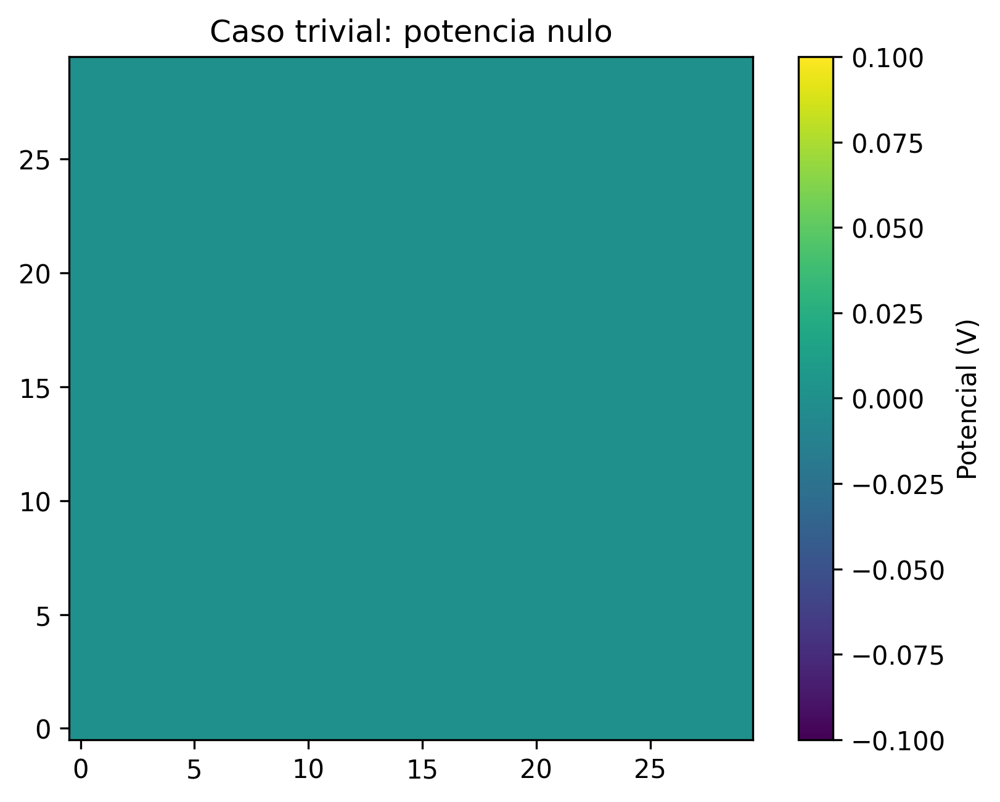
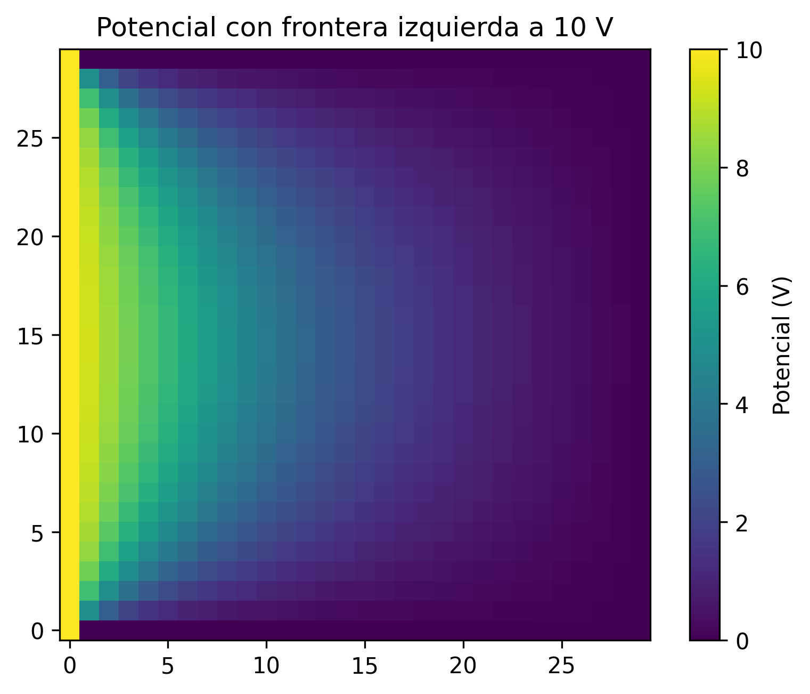
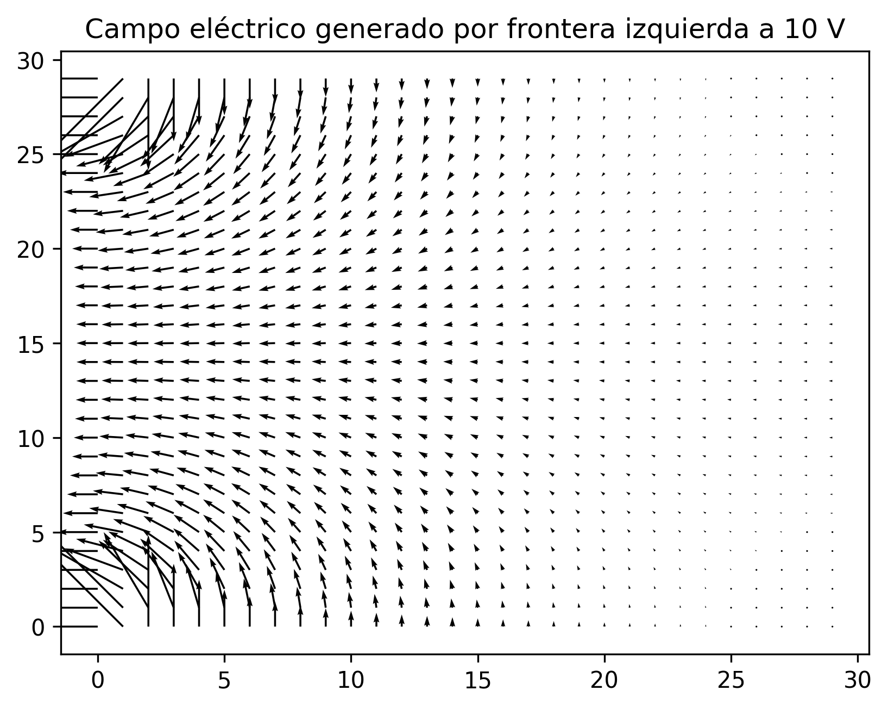
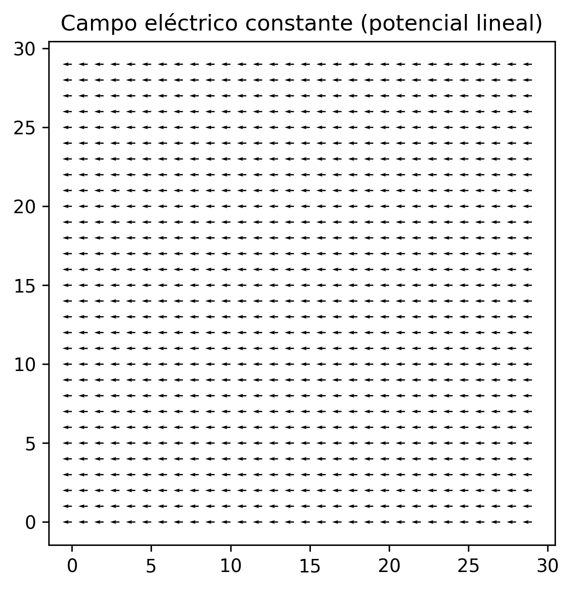
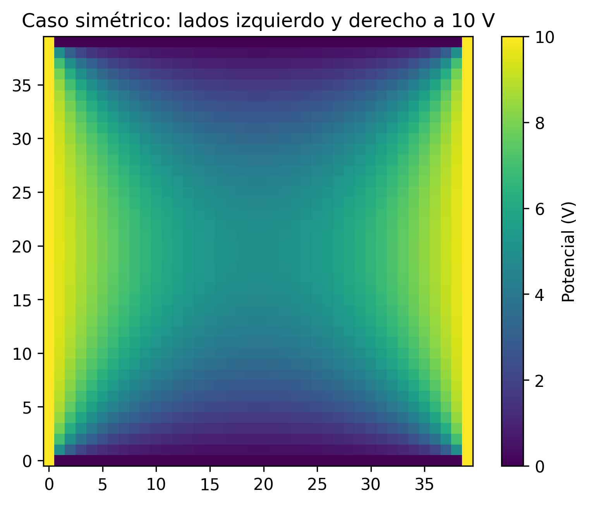
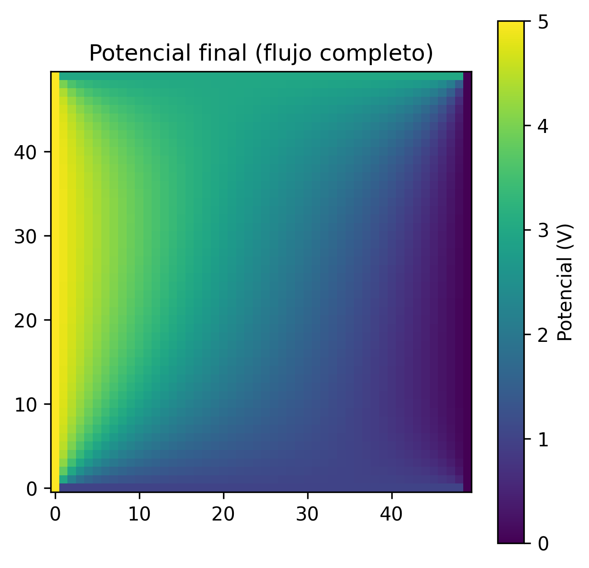

Pruebas y Ejemplos de Uso
Esta sección presenta una serie de ejemplos prácticos que muestran cómo utilizar
el solucionador numérico LaplaceSolver2D y cuáles son las salidas típicas
generadas por el programa.
Los ejemplos incluyen:
Configuración de casos simples.
Ejecución del método de Gauss–Seidel.
Obtención del mapa de potencial.
Cálculo del campo eléctrico.
Visualizaciones generadas.
Caso 1: potencial nulo en todas las fronteras
El caso más simple consiste en fijar todas las fronteras a 0 V:
from campo_estatico_mdf.solver import LaplaceSolver2D
import numpy as np
solver = LaplaceSolver2D(N=10, V_izq=0, V_der=0, V_sup=0, V_inf=0)
solver.aplicar_condiciones_contorno()
V, iteraciones, historial_error = solver.resolver_gauss_seidel()
La solución física es trivial: el potencial es cero en todo el dominio.
Salida esperada:
{kind=link}

Caso 2: frontera izquierda a 10 V y el resto a 0 V
Este ejemplo muestra un caso clásico de conducción con una sola frontera excitada.
solver = LaplaceSolver2D(N=20, V_izq=10, V_der=0, V_sup=0, V_inf=0)
solver.aplicar_condiciones_contorno()
V, iteraciones, historial_error = solver.resolver_gauss_seidel()
El resultado es un gradiente suave desde 10 V hasta 0 V.
Mapa de potencial:
{kind=link}

Campo eléctrico:
{kind=link}

Caso 3: potencial lineal impuesto (campo constante)
En este ejemplo el usuario define manualmente un potencial lineal sin necesidad de realizar iteraciones:
N = 20
V_izq, V_der = 10, 0
solver = LaplaceSolver2D(N=N, V_izq=V_izq, V_der=V_der, V_sup=0, V_inf=0)
lin = np.linspace(V_izq, V_der, N)
solver.V = np.tile(lin, (N, 1))
Ex, Ey = solver.calcular_campo_e()
Esto genera un campo eléctrico constante en toda la malla.
Visualización del campo eléctrico:
{kind=link}

Caso 4: caso simétrico (dos fronteras a 10 V)
Un caso interesante es cuando las fronteras izquierda y derecha se fijan a 10 V, mientras que las superior e inferior permanecen a 0 V.
solver = LaplaceSolver2D(N=30, V_izq=10, V_der=10, V_sup=0, V_inf=0)
solver.aplicar_condiciones_contorno()
V, iteraciones, historial_error = solver.resolver_gauss_seidel()
El resultado presenta simetría horizontal y un potencial distribuido en forma de curvatura suave.
Mapa de potencial:
{kind=link}

Ejecución completa del flujo
Este fragmento muestra un uso típico en un script.
La tolerancia numérica se define únicamente al crear el solver mediante su
parámetro tolerancia:
solver = LaplaceSolver2D(
N=50,
V_izq=5,
V_der=0,
V_sup=3,
V_inf=1,
tolerancia=1e-5
)
solver.aplicar_condiciones_contorno()
V, iteraciones, historial_error = solver.resolver_gauss_seidel()
Ex, Ey = solver.calcular_campo_e()
print(f"Convergió en {iteraciones} iteraciones.")
Ejemplo de salida visual:
{kind=link}
